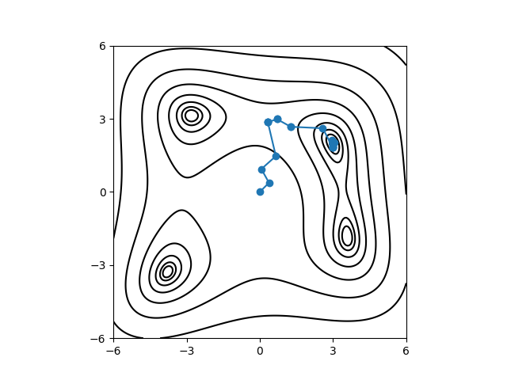

Nelder-Mead法による探索#
ここでは、Nelder-Mead法を用いて Himmelblau関数の最小値を探索する方法について説明します。 具体的な計算手順は以下の通りです。
入力ファイルを用意する
入力パラメータをTOML形式で記述した入力ファイルを作成します。
メインプログラムを実行する
odatseコマンドを用いて計算を実行し、最適化問題を解きます。
サンプルファイルの場所#
サンプルファイルは sample/analytical/minsearch にあります。
フォルダには以下のファイルが格納されています。
input.tomlメインプログラムの入力ファイル
do.sh本チュートリアルを一括計算するために準備されたスクリプト
また、計算結果を可視化するために sample/analytical フォルダ内の plot_himmel.py を利用します。
入力ファイルの説明#
メインプログラム用の入力ファイル input.toml を作成します。記述方法の詳細については「入力ファイル」の項を参照してください。
[base]
dimension = 2
output_dir = "output"
[solver]
name = "analytical"
function_name = "himmelblau"
[runner]
[runner.log]
interval = 20
[algorithm]
name = "minsearch"
seed = 12345
[algorithm.param]
min_list = [-6.0, -6.0]
max_list = [ 6.0, 6.0]
initial_list = [0, 0]
[base] セクションではプログラム全体で利用するパラメータを設定します。
dimensionは最適化したい変数の個数です。Himmelblau関数は 2変数関数ですので、今の場合は2を指定します。output_dirは出力先のディレクトリを指定します。
[solver] セクションではメインプログラムの内部で使用するソルバーとその設定を指定します。
nameは使用するソルバーの名前です。このチュートリアルではanalyticalソルバーに含まれる解析関数の解析を行います。function_nameはanalyticalソルバー内の関数名を指定します。
[runner] セクションでは、逆問題解析アルゴリズムからソルバーの呼び出しに関する設定を行います。
[runner.log]のintervalは、ソルバー呼び出しのログをファイルへ書き出す間隔（バッファ件数）を指定します。呼び出しはすべて記録され、interval件たまるごとにまとめて書き出されます。
[algorithm] セクションでは、使用するアルゴリズムとその設定をします。
nameは使用するアルゴリズムの名前です。このチュートリアルでは、Nelder-Mead法 を用いた解析を行うので、minsearchを指定します。seedは乱数の初期値を指定します。
[algorithm.param] セクションでは、探索するパラメータの範囲や初期値を指定します。
min_listとmax_listはそれぞれ探索範囲の最小値と最大値を指定します。initial_listは初期値を指定します。
ここではデフォルト値を用いるため省略しましたが、その他のパラメータ、例えば Nelder-Mead 法で使用する収束判定条件などは、[algorithm.minimize] セクションで設定できます。詳細は 局所最適化アルゴリズムによる最適値探索 minsearch を参照してください。
詳細については「入力ファイル」の章を参照してください。
計算の実行#
最初にサンプルファイルが置いてあるフォルダへ移動します。(以下では、ODAT-SE パッケージをダウンロードしたディレクトリの直下にいることを仮定します。)
$ cd sample/analytical/minsearch
メインプログラムを実行します。計算時間は通常のPCで数秒程度で終わります。
$ odatse input.toml | tee log.txt
実行すると、以下のような出力がされます。
name : minsearch
seed : 12345
param.max_list : [6.0, 6.0]
param.min_list : [-6.0, -6.0]
param.initial_list: [0, 0]
eval: x=[0.375 0.375], fun=151.96923828125
eval: x=[0.0625 0.9375], fun=137.88186645507812
eval: x=[0.65625 1.46875], fun=100.34764289855957
eval: x=[0.328125 2.859375], fun=66.79089844226837
...
eval: x=[2.99996696 1.99999734], fun=4.2278370361994904e-08
Optimization terminated successfully.
Current function value: 0.000000
Iterations: 40
Function evaluations: 79
end of run
x1, x2 に各ステップでの候補パラメータと、その時の関数値が出力されます。
最終的に推定されたパラメータは output/res.txt に出力されます。今の場合、
fx = 4.2278370361994904e-08
x1 = 2.9999669562950175
x2 = 1.9999973389336225
が得られ、最小値を与える解の一つが求められたことが分かります。
計算結果の可視化#
Nelder-Mead法による解の探索の経路は output/0/SimplexData.txt に出力されています。
これをプロットするツールが sample/analytical/plot_himmel.py に用意されています。
$ python3 ../plot_himmel.py --xcol=1 --ycol=2 --output=output/res.pdf output/0/SimplexData.txt
上記を実行すると output/res.pdf が出力されます。

Nelder-Mead法を用いた Himmelblau 関数の最小値探索。黒線は Himmelblau関数の関数値を表す等高線、青色のシンボルは探索経路。#
Himmelblau関数の関数値を表す等高線の上に Nelder-Mead法による探索の経路がプロットされます。初期値 (0, 0) からスタートして最小値を与える解の一つ (3, 2) に到達していることが分かります。